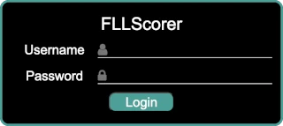
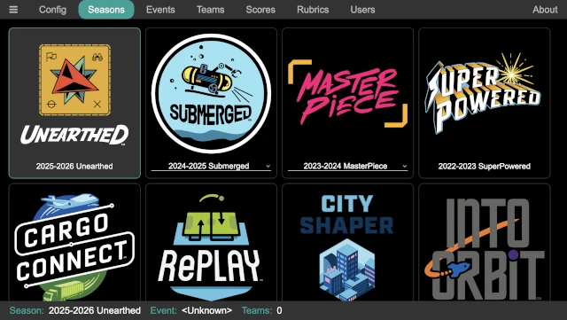
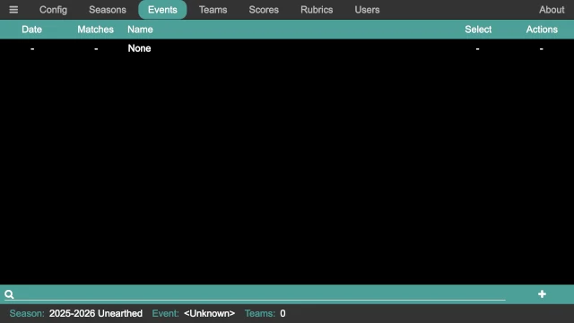

Common Setup
There is some event-specific common setup that must be performed, no matter how the event is run. Those steps are described here, and are a prerequisite to the following quickstart guides.
If an event has already been run using the scoring computer, it is possible that the first two steps can be skipped, and the Create the event step is the first that is needed.
Configuration
The first thing to do is some basic configuration of the scoring software to match the region or event’s needs. Start from the QR code page:

Click on the Admin QR code to access the admin page, bringing up the login screen:
Log in as the admin user; the user name is admin and the default password
is FLLRocks! (use the actual password if it has been changed!). Once
logged in, click on the Config button at the top:
There are two configuration values that require attention:
- Divisions
If the region uses a division model, division support can be enabled via this checkbox. Further configuration of the division is then exposed, allowing the number of divisions, the division names, and the division colors (in order to easily distinguish them on the scoreboard) to be configured. If the defaults are not suitable, they can be changed; otherwise, no further configuration is needed.
- Scoreboard
To support having a single audience display, the timer can optionally be displayed on the scoreboard. By default, it is disabled, but it can be enabled via this checkbox. When enabled, the timer can be placed at the top of the scoreboard (over the event name), making it easy to still see the scoreboard; alternatively, it can be placed in the middle of the screen (overlapping part of the scoreboard), making it easier to see the timer but partially obscuring the scoreboard (only during a match though).
The other configuration options can be adjusted if desired, though it is not necessary.
Select a Season
The next thing to do is to select the season (in the majority of cases, the correct season is already selected, since the latest season is the default). In the admin panel, click on the Seasons button at the top:
Simply click on the desired season; it is highlighted, and it appears in the status line at the bottom of the page. The status line is always helpful to ensure that the correct season, event, and number of teams are correct (in case one of them is inadvertently changed).
Some seasons have alternate games/scoresheets. In this case, the name below the season logo is a dropdown selection; select an alternate game if desired (the rules for the alternate games must be separately acquired!).
Create the event
The next thing to do is to create the event. In the admin panel, click on the Events button at the top:
Click on the add event button in the lower right corner of the page to add an event:

Enter the details for the event; the name of the event (for example, Kickoff
Spectacular), the date of the event, and the number of matches in the event
(in most cases, it is 3 w/ practice, which is a practice match and then
three official matches). Click on OK when done to create the event. Then
click on the box in the Select column for the newly created event to make
it the current event.
The status line at the bottom of the admin panel always shows the currently active event, and can always be consulted to ensure that the active event has not been inadvertently changed (which would cause confusion for everyone involved!).
Add the Teams
The next step is to add the teams. Depending on previous uses of the computer, some or all of the teams at the event may already be entered (for example, at a championship event where all the teams have previously competed at a qualifier event). Or, they may all need to be entered. Start by clicking on the Teams button at the top of the admin panel:

Teams can be entered in one of two way:
Teams can be individually entered by clicking on the add team button in the lower right, bring up the add team dialog:

Enter the team number, team name, and their division (if divisions are enabled; the division select does not appear when divisions are disabled). Click on
OKwhen done to add them. After returning to the list of teams, the square under theAt Eventcolumn must be checked to add them to the currently selected event.Teams can be bulk added via a CSV file by clicking on the upload button in the lower right. The CSV file must contain at least a team number column (labeled
number) and a team name column (labeledname); and must also have a division column (labeleddivision) if divisions are enabled. As an example:number,name 37350,"Bricks r' Us" 43157,"Motors of Mayhem" 47654,"LEGO Legion" 52528,"Friends of LEGO" 53342,"We V3" 55578,"Crazy Gyros" 55699,"Block Stars" 57773,"Blockenspiel" 57873,"Beams & Axles" 58405,"Snapped Together" 63979,"Spike Storms" 64057,"Gearheads"
This adds twelve teams to the event. The columns in the CSV can be in any order, and additional columns are ignored. The names of the columns must match these labels, but can be capitalized in any manner.
When adding teams via a CSV file, they are all added to the current event automatically. If the team already exists, it is simply added to the current event, so it is safe to re-upload the CSV file (for example if there are any late additions to the event, and a master CSV is updated).
Showing the Scoreboard
In order to show the scoreboard, start from the QR code page:
Click on the Scoreboard QR code to bring up the scoreboard. Alternatively, as would happen if a different computer is being used to display the scoreboard, the URL under the QR code can be typed into the browser on the other computer.
Note
If using a different computer, additional steps may be needed to ensure that there is a network connection between the two computers so that they can communicate; see Networking for details.
This page displays the current scoreboard. Eight teams are displayed at a time, periodically updating to the next eight teams and wrapping back to the start after the final teams are displayed. New scores do not appear on the scoreboard until it starts the cycle back over at the first team, which may add to the suspense of teams waiting to see their score! If divisions are enabled, the scoreboard cycles through the score for the divisions in order (in other words, the first division, then the second division, and so on).
This is a display-only page, so it is safe to have out where participants may be able to access it (though hopefully they demonstrate good Gracious Professionalism and leave it alone!). It is also worth noting that no game sounds are produced by the scoreboard page (even when the timer is enabled); they are only played on the computer that runs the main application.
Once the scoreboard is displayed and moved to the appropriate screen (for example, if a secondary output from the comptuer is being used to display the scoreboard), pressing Ctrl-F when the scoreboard window is selected makes the scoreboard be fullscreen. This hides the window decorations, tool bars, and so on, so that just the scoreboard is visible. Pressing Escape or Ctrl-F leaves fullscreen mode.
Showing the Timer
If the scoreboard is configured to show the timer, it is likely that this step can be skipped! If, however, a separate timer is being displayed (either in conjunction with a timer on the scoreboard, or instead of a timer on the scoreboard), the timer needs to be displayed.
Like showing the scoreboard, start from the QR code page:
Click on the Timer QR code to bring up the timer. Alternatively, especially if a different computer is being used to display the timer, the URL under the QR code can be typed into the browser on the other computer.
Note
The same network connection requirement exists here!

This page displays the current state of the timer. It is a display-only page, so it is safe to have out where participants maybe able to access it (though hopefully they demonstrate good Gracious Professionalism and leave it alone!). It is also worth noting that no game sounds are produced by the timer page; they are only played on the computer that runs the main application.
Once the timer is displayed and moved to the appropriate screen (for example, if a secondary output from the comptuer is being used to display the timer), pressing Ctrl-F when the timer window is selected makes the timer page be fullscreen. This hides the window decorations, tool bars, and so on, so that just the match timer is visible. Pressing Escape or Ctrl-F leaves fullscreen mode.
Next Steps
The next steps depends on how the event is being scored. There are two main choices:
- Events with a Scorekeeper
An event with the referees filling out paper scoresheets and a scorekeeper entering them into the computer.
- Events with Referees Scoring
An event with the referees filling out the electronic scoresheet on a tablet or phone.